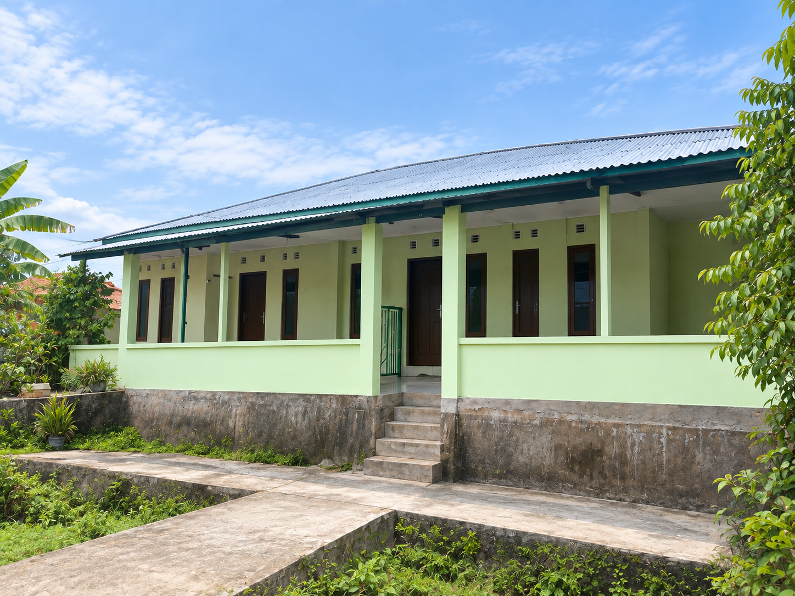

Kontrakan Pak Sapriadi, tempat pulang yang tenang di Tarakan.
Tiga pintu kontrakan mandiri. Setiap unit punya ruang tengah, dua kamar tidur, dapur, dan toilet sendiri, dengan sewa Rp1.000.000 per bulan.
Tiga pintu kontrakan mandiri. Setiap unit punya ruang tengah, dua kamar tidur, dapur, dan toilet sendiri, dengan sewa Rp1.000.000 per bulan.

Status dan harga diambil langsung dari data pengelola, sehingga selalu sama dengan yang ada di dashboard.
Jelajahi panorama ruangan Kontrakan Pak Sapriadi. Geser gambar untuk melihat sekeliling dan gunakan kontrol yang tersedia untuk memperbesar tampilan.
Memuat panorama Room Tour...
Pada komputer, klik dan seret gambar menggunakan mouse. Pada ponsel, sentuh dan geser gambar untuk melihat sekeliling.
Panorama memberikan gambaran ruangan. Untuk survei langsung, silakan tanyakan jadwal kepada pemilik.
Isi formulir singkat, lalu lanjutkan percakapan dengan pemilik lewat WhatsApp.
Masuk untuk melihat unit, tagihan, dan mengirim laporan kepada pemilik.
Masuk ke sistem